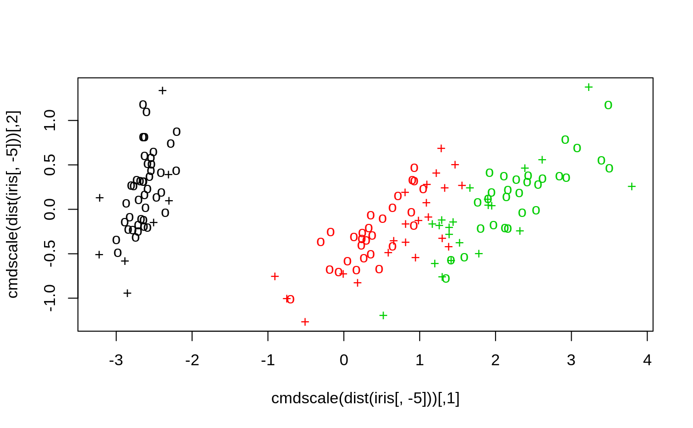
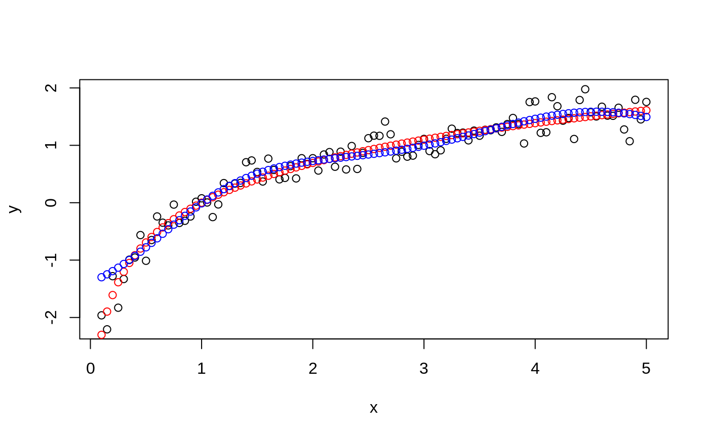
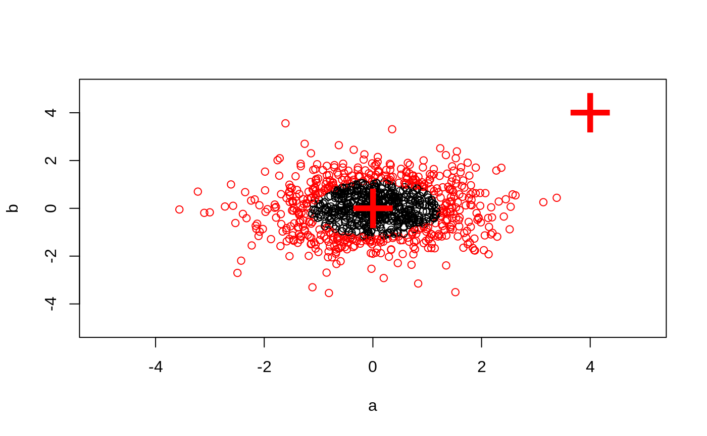
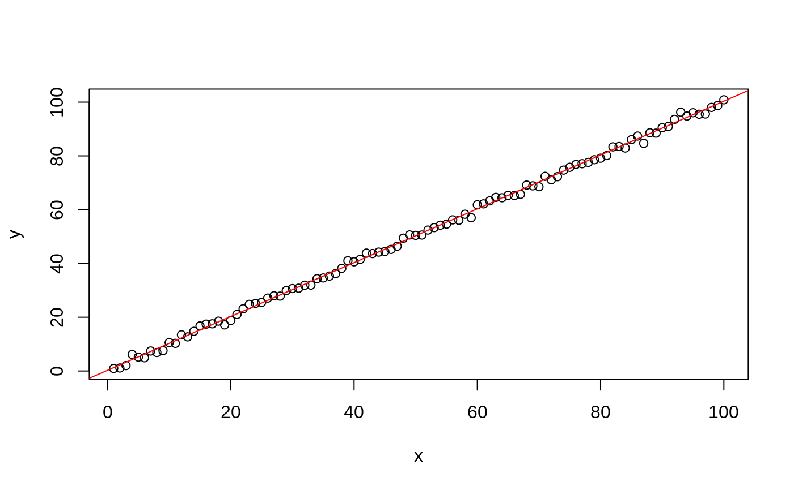
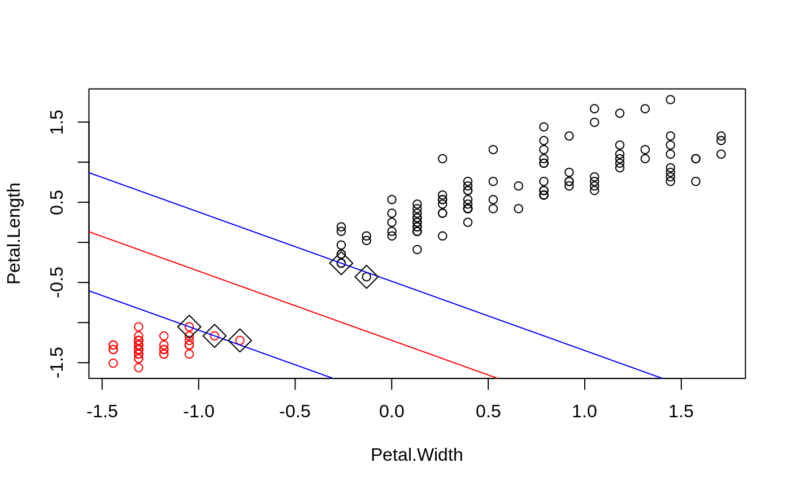

svm.Rdsvm is used to train a support vector machine. It can be used to carry
out general regression and classification (of nu and epsilon-type), as
well as density-estimation. A formula interface is provided.
# S3 method for formula svm(formula, data = NULL, ..., subset, na.action = na.omit, scale = TRUE) # S3 method for default svm(x, y = NULL, scale = TRUE, type = NULL, kernel = "radial", degree = 3, gamma = if (is.vector(x)) 1 else 1 / ncol(x), coef0 = 0, cost = 1, nu = 0.5, class.weights = NULL, cachesize = 40, tolerance = 0.001, epsilon = 0.1, shrinking = TRUE, cross = 0, probability = FALSE, fitted = TRUE, ..., subset, na.action = na.omit)
| formula | a symbolic description of the model to be fit. |
|---|---|
| data | an optional data frame containing the variables in the model. By default the variables are taken from the environment which ‘svm’ is called from. |
| x | a data matrix, a vector, or a sparse matrix (object of class
|
| y | a response vector with one label for each row/component of
|
| scale | A logical vector indicating the variables to be
scaled. If |
| type |
|
| kernel | the kernel used in training and predicting. You
might consider changing some of the following parameters, depending
on the kernel type.
|
| degree | parameter needed for kernel of type |
| gamma | parameter needed for all kernels except |
| coef0 | parameter needed for kernels of type |
| cost | cost of constraints violation (default: 1)---it is the ‘C’-constant of the regularization term in the Lagrange formulation. |
| nu | parameter needed for |
| class.weights | a named vector of weights for the different
classes, used for asymmetric class sizes. Not all factor levels have
to be supplied (default weight: 1). All components have to be
named. Specifying |
| cachesize | cache memory in MB (default 40) |
| tolerance | tolerance of termination criterion (default: 0.001) |
| epsilon | epsilon in the insensitive-loss function (default: 0.1) |
| shrinking | option whether to use the shrinking-heuristics
(default: |
| cross | if a integer value k>0 is specified, a k-fold cross validation on the training data is performed to assess the quality of the model: the accuracy rate for classification and the Mean Squared Error for regression |
| fitted | logical indicating whether the fitted values should be computed
and included in the model or not (default: |
| probability | logical indicating whether the model should allow for probability predictions. |
| ... | additional parameters for the low level fitting function
|
| subset | An index vector specifying the cases to be used in the training sample. (NOTE: If given, this argument must be named.) |
| na.action | A function to specify the action to be taken if |
An object of class "svm" containing the fitted model, including:
The resulting support vectors (possibly scaled).
The index of the resulting support vectors in the data
matrix. Note that this index refers to the preprocessed data (after
the possible effect of na.omit and subset)
The corresponding coefficients times the training labels.
The negative intercept.
In case of a probabilistic regression model, the scale parameter of the hypothesized (zero-mean) laplace distribution estimated by maximum likelihood.
numeric vectors of length k(k-1)/2, k number of classes, containing the parameters of the logistic distributions fitted to the decision values of the binary classifiers (1 / (1 + exp(a x + b))).
For multiclass-classification with k levels, k>2, libsvm uses the
‘one-against-one’-approach, in which k(k-1)/2 binary classifiers are
trained; the appropriate class is found by a voting scheme.
libsvm internally uses a sparse data representation, which is
also high-level supported by the package SparseM.
If the predictor variables include factors, the formula interface must be used to get a correct model matrix.
plot.svm allows a simple graphical
visualization of classification models.
The probability model for classification fits a logistic distribution using maximum likelihood to the decision values of all binary classifiers, and computes the a-posteriori class probabilities for the multi-class problem using quadratic optimization. The probabilistic regression model assumes (zero-mean) laplace-distributed errors for the predictions, and estimates the scale parameter using maximum likelihood.
For linear kernel, the coefficients of the regression/decision hyperplane
can be extracted using the coef method (see examples).
Data are scaled internally, usually yielding better results.
Parameters of SVM-models usually must be tuned to yield sensible results!
Chang, Chih-Chung and Lin, Chih-Jen:
LIBSVM: a library for Support Vector Machines
http://www.csie.ntu.edu.tw/~cjlin/libsvm
Exact formulations of models, algorithms, etc. can be found in the
document:
Chang, Chih-Chung and Lin, Chih-Jen:
LIBSVM: a library for Support Vector Machines
http://www.csie.ntu.edu.tw/~cjlin/papers/libsvm.ps.gz
More implementation details and speed benchmarks can be found on:
Rong-En Fan and Pai-Hsune Chen and Chih-Jen Lin:
Working Set Selection Using the Second Order Information for Training SVM
http://www.csie.ntu.edu.tw/~cjlin/papers/quadworkset.pdf
predict.svm
plot.svm
tune.svm
matrix.csr (in package SparseM)
#> #> #>## classification mode # default with factor response: model <- svm(Species ~ ., data = iris) # alternatively the traditional interface: x <- subset(iris, select = -Species) y <- Species model <- svm(x, y) print(model)#> #> Call: #> svm.default(x = x, y = y) #> #> #> Parameters: #> SVM-Type: C-classification #> SVM-Kernel: radial #> cost: 1 #> #> Number of Support Vectors: 51 #>summary(model)#> #> Call: #> svm.default(x = x, y = y) #> #> #> Parameters: #> SVM-Type: C-classification #> SVM-Kernel: radial #> cost: 1 #> #> Number of Support Vectors: 51 #> #> ( 8 22 21 ) #> #> #> Number of Classes: 3 #> #> Levels: #> setosa versicolor virginica #> #> #># test with train data pred <- predict(model, x) # (same as:) pred <- fitted(model) # Check accuracy: table(pred, y)#> y #> pred setosa versicolor virginica #> setosa 50 0 0 #> versicolor 0 48 2 #> virginica 0 2 48# compute decision values and probabilities: pred <- predict(model, x, decision.values = TRUE) attr(pred, "decision.values")[1:4,]#> setosa/versicolor setosa/virginica versicolor/virginica #> 1 1.196152 1.091757 0.6708810 #> 2 1.064621 1.056185 0.8483518 #> 3 1.180842 1.074542 0.6439798 #> 4 1.110699 1.053012 0.6782041# visualize (classes by color, SV by crosses): plot(cmdscale(dist(iris[,-5])), col = as.integer(iris[,5]), pch = c("o","+")[1:150 %in% model$index + 1])## try regression mode on two dimensions # create data x <- seq(0.1, 5, by = 0.05) y <- log(x) + rnorm(x, sd = 0.2) # estimate model and predict input values m <- svm(x, y) new <- predict(m, x) # visualize plot(x, y)## density-estimation # create 2-dim. normal with rho=0: X <- data.frame(a = rnorm(1000), b = rnorm(1000)) attach(X)#> #> #># traditional way: m <- svm(X, gamma = 0.1) # formula interface: m <- svm(~., data = X, gamma = 0.1) # or: m <- svm(~ a + b, gamma = 0.1) # test: newdata <- data.frame(a = c(0, 4), b = c(0, 4)) predict (m, newdata)#> 1 2 #> TRUE FALSE## weights: (example not particularly sensible) i2 <- iris levels(i2$Species)[3] <- "versicolor" summary(i2$Species)#> setosa versicolor #> 50 100#> #> setosa versicolor #> 2 1m <- svm(Species ~ ., data = i2, class.weights = wts) ## extract coefficients for linear kernel # a. regression x <- 1:100 y <- x + rnorm(100) m <- svm(y ~ x, scale = FALSE, kernel = "linear") coef(m)#> (Intercept) x #> 0.2708256 1.0008886# b. classification # transform iris data to binary problem, and scale data setosa <- as.factor(iris$Species == "setosa") iris2 = scale(iris[,-5]) # fit binary C-classification model m <- svm(setosa ~ Petal.Width + Petal.Length, data = iris2, kernel = "linear") # plot data and separating hyperplane plot(Petal.Length ~ Petal.Width, data = iris2, col = setosa)#> (Intercept) Petal.Width Petal.Length #> -1.658953 -1.172523 -1.358030